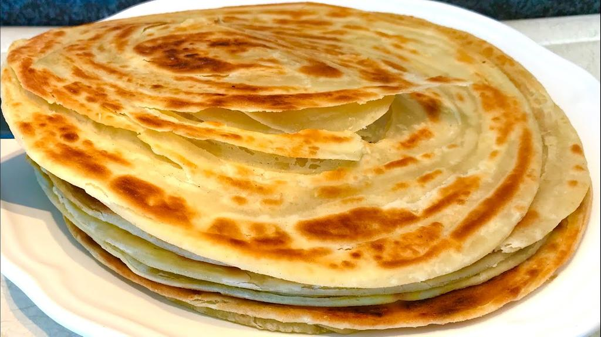

Chapati Recipe

Kenyan Chapati
Kenyan chapati is made from wheat flour mixed with warm water, sugar, cooking oil and baking powder
These items are mixed together to form a thick dough which is left to incubate at room temperature.
The dough is then rolled to flat circular shape and then placed on hot pan to a golden brown colour as showed in the above image
Recipe
- Wheat flour
- water
- sugar
- Baking powder
- Cooking oil
Steps
- Warm 2 litres of water to arnd 40 degrees celcius.
- Add 1.5kgs of the wheat flour.
- Add 1 table spoon of sugar.
- Add 1 table spoon of baking powder.
- Mix then together to form a thick dough.
- Pour two to three spoonfulls of cooking oil onto the dough and mix then throroughly, this will soften the dough and will make it non sticky to your hands.
- Cover the dough with cling film and put incubate at 30 degrees celcious or under sunlight for 20-40 minutes.
- Cut a handful of the dough and then place it on the flat surface with flour.
- Roll it with a rolling stick to a flat round shape.
- Pour a spoonfull of cooking oil on a hot pan and place the round dough on the pasn.
- Let it turn to golden brown and flip the dough to the opposite side till it's golden brown.
- Your chapati is ready, enjoy!